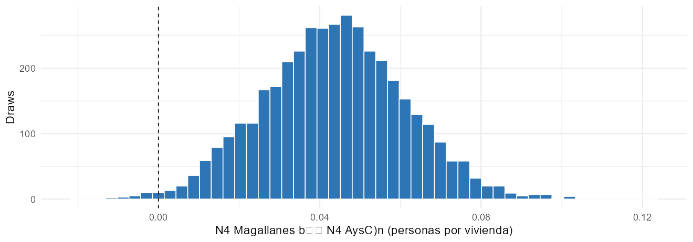
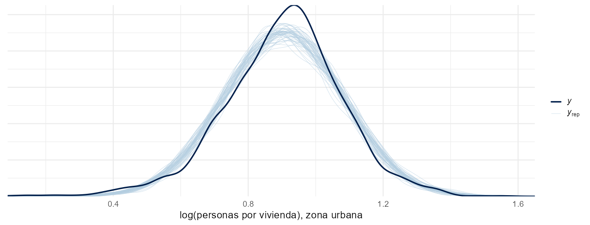

Práctica computacional en RStan: fundamentos de la inferencia bayesiana
CEPAL · UNFPA América Latina y el Caribe · INE Chile
Invalid Date
Los ejercicios 4 y 5 se conservan como extensiones para grupos que avancen más rápido o trabajo posterior. La primera compilación de los modelos puede requerir tiempo adicional.
Por pareja, registre:
Las respuestas deben identificar el modelo, los datos usados y los supuestos de cada comparación.
Dia1_S4_Practica).Rcode/Practica_Dia1.R contiene todas las soluciones, organizadas en bloques ## ---- nombre ---- que coinciden con los de esta presentación.| Ejercicio | Modelo | Tema |
|---|---|---|
| 1 | Bernoulli–Beta | Proporción de segmentos con viviendas colectivas; sensibilidad a la previa |
| 2 | Poisson–Gamma | Densidad en dos regiones; posterior de una diferencia; sobredispersión |
| 3 | Normal | Densidad por zona; razón de medianas; chequeo predictivo |
| 4 | Multinomial–Dirichlet | Distribución de segmentos por zona |
| 5 | Metropolis | Programar el algoritmo y evaluar la convergencia |
| Modelo | Previa | Posterior | Uso en la práctica |
|---|---|---|---|
| \(Y_i \sim \text{Bernoulli}(\theta)\) | \(\text{Beta}(a, b)\) | \(\text{Beta}(a + s,\ b + n - s)\) | Proporción de segmentos con colectivas |
| \(Y_i \sim \text{Poisson}(\delta V_i)\) | \(\text{Gamma}(a, b)\) | \(\text{Gamma}(a + \sum Y_i,\ b + \sum V_i)\) | Personas por vivienda por región |
| \(\log\delta_i \sim N(\mu, \sigma^2)\) | \(\mu \sim N(0, 10^2)\), \(\sigma \sim \text{Cauchy}^+\) | Sin forma cerrada: Stan | Densidad por zona |
| \(\mathbf{y} \sim \text{Multinomial}(n, \boldsymbol\theta)\) | \(\text{Dirichlet}(\boldsymbol\alpha)\) | \(\text{Dirichlet}(\boldsymbol\alpha + \mathbf{y})\) | Segmentos por zona |
Con los draws de cada posterior se obtiene cualquier cantidad derivada: diferencias entre regiones, razones entre zonas o probabilidades de eventos.
data/segmentos_magallanes.rds: segmentos de la región de Magallanes (región 12).data/segmentos_aysen.rds: segmentos de Aysén, usados en las sesiones previas.stan/: bernoulli_beta.stan, poisson_gamma.stan, normal_media_varianza.stan, multinomial_dirichlet.stan.Rows: 3,044
Columns: 8
$ edid <chr> "12101011001001", "12101011001008", "121010110~
$ zona <fct> urbana, urbana, urbana, urbana, urbana, urbana~
$ n_per <int> 21, 68, 84, 194, 90, 29, 44, 25, 99, 46, 91, 1~
$ n_vpo <int> 12, 21, 39, 88, 33, 10, 16, 8, 39, 15, 38, 39,~
$ n_vc <int> 0, 1, 1, 0, 0, 0, 0, 0, 0, 0, 0, 0, 0, 0, 0, 0~
$ clasificacion_cobertura <fct> Completa, Parcial, Completa, Parcial, Parcial,~
$ delta <dbl> 1.750000, 3.238095, 2.153846, 2.204545, 2.7272~
$ apto_modelo <lgl> TRUE, FALSE, FALSE, TRUE, TRUE, TRUE, TRUE, TR~
# A tibble: 3,044 x 8
edid zona n_per n_vpo n_vc clasificacion_cobert~1 delta apto_modelo
<chr> <fct> <int> <int> <int> <fct> <dbl> <lgl>
1 12101011001~ urba~ 21 12 0 Completa 1.75 TRUE
2 12101011001~ urba~ 68 21 1 Parcial 3.24 FALSE
3 12101011001~ urba~ 84 39 1 Completa 2.15 FALSE
4 12101011001~ urba~ 194 88 0 Parcial 2.20 TRUE
5 12101011001~ urba~ 90 33 0 Parcial 2.73 TRUE
6 12101011001~ urba~ 29 10 0 Completa 2.9 TRUE
7 12101011001~ urba~ 44 16 0 Parcial 2.75 TRUE
8 12101011001~ urba~ 25 8 0 Completa 3.12 TRUE
9 12101011001~ urba~ 99 39 0 Parcial 2.54 TRUE
10 12101011001~ urba~ 46 15 0 Parcial 3.07 TRUE
# i 3,034 more rows
# i abbreviated name: 1: clasificacion_coberturaLa variable n_vc > 0 identifica segmentos con viviendas colectivas (hospitales, cuarteles, residencias). No debe confundirse automáticamente con excluido_colectivo, que es el indicador usado por el filtro del modelo.
La proporción de este conjunto observado se calcula directamente; aquí se usa como ejemplo para inferir una probabilidad Bernoulli para segmentos comparables.
n_vc > 0), con una previa \(\text{Beta}(1, 1)\): primero en forma analítica y luego con stan/bernoulli_beta.stan.\[ \theta \mid \mathbf{y} \sim \text{Beta}(a + s,\ b + n - s), \qquad E(\theta \mid \mathbf{y}) = \frac{a + s}{a + b + n}. \]
La previa \(\text{Beta}(1, 99)\) tiene media \(0{,}01\) y tiene concentración \(a + b = 100\); esta analogía con pseudoconteos no representa observaciones reales. El peso de los datos es
\[ w = \frac{n}{a + b + n} = \frac{3.044}{100 + 3.044} = 0,968. \]
stopifnot(!anyNA(magallanes$n_vc), !anyNA(magallanes$zona))
y <- as.integer(magallanes$n_vc > 0)
posterior_beta <- function(a, b) {
c(media = (a + sum(y)) / (a + b + length(y)),
q025 = qbeta(0.025, a + sum(y), b + length(y) - sum(y)),
q975 = qbeta(0.975, a + sum(y), b + length(y) - sum(y)))
}
modelo_bern <- stan_model("stan/bernoulli_beta.stan")
fit_ej1 <- sampling(modelo_bern, data = list(n = length(y), y = y, a = 1, b = 1),
chains = 4, iter = 2000, warmup = 1000, seed = 101, refresh = 0)
fit_ej1_sens <- sampling(modelo_bern,
data = list(n = length(y), y = y, a = 1, b = 99),
chains = 4, iter = 2000, warmup = 1000, seed = 102, refresh = 0)summary_theta <- function(fit) {
draws <- as.data.frame(fit)$theta
c(media = mean(draws), q025 = unname(quantile(draws, 0.025)),
q975 = unname(quantile(draws, 0.975)))
}
ej1 <- rbind(`Analítica Beta(1, 1)` = posterior_beta(1, 1),
`Stan Beta(1, 1)` = summary_theta(fit_ej1),
`Analítica Beta(1, 99)` = posterior_beta(1, 99),
`Stan Beta(1, 99)` = summary_theta(fit_ej1_sens)) %>%
as.data.frame() %>% rownames_to_column("metodo")
ej1| metodo | media | q025 | q975 |
|---|---|---|---|
| AnalC-tica Beta(1, 1) | 0,1028 | 0,0922 | 0,1138 |
| Stan Beta(1, 1) | 0,1026 | 0,0920 | 0,1141 |
| AnalC-tica Beta(1, 99) | 0,0996 | 0,0893 | 0,1103 |
| Stan Beta(1, 99) | 0,0997 | 0,0895 | 0,1106 |
Hay 312 segmentos con viviendas colectivas entre 3.044. Con tantos segmentos, la previa informativa apenas mueve la posterior: los datos pesan un 96,8%.
n_vpo > 0, ajuste el modelo Poisson–Gamma (stan/poisson_gamma.stan) para Magallanes y para Aysén.La factorización siguiente supone verosimilitudes independientes y previas independientes, sin parámetros compartidos entre regiones. Tener datos distintos por sí solo no garantiza independencia posterior:
\[ p(\delta_M, \delta_A \mid \mathbf{Y}_M, \mathbf{Y}_A) = p(\delta_M \mid \mathbf{Y}_M)\,p(\delta_A \mid \mathbf{Y}_A). \]
Si \(\delta_M^{(s)}\) y \(\delta_A^{(s)}\) son draws de cada posterior, \(\Delta^{(s)} = \delta_M^{(s)} - \delta_A^{(s)}\) son draws de la posterior de la diferencia, y
\[ \Pr(\delta_M > \delta_A \mid \mathbf{Y}) \approx \frac{1}{S}\sum_{s=1}^S \mathbb{1}\big(\Delta^{(s)} > 0\big). \]
Analíticamente, \(E(\Delta) = \frac{a_M'}{b_M'} - \frac{a_A'}{b_A'}\) y \(\text{Var}(\Delta) = \frac{a_M'}{b_M'^2} + \frac{a_A'}{b_A'^2}\).
modelo_pg <- stan_model("stan/poisson_gamma.stan")
ajustar_pg <- function(datos, seed) {
completos <- datos %>% filter(clasificacion_cobertura == "Completa", !excluido_colectivo, n_vpo > 0)
sampling(modelo_pg,
data = list(n = nrow(completos), y = completos$n_per, v = completos$n_vpo,
a = 0.01, b = 0.01),
chains = 4, iter = 2000, warmup = 1000, seed = seed, refresh = 0)
}
fit_mag <- ajustar_pg(magallanes, seed = 201)
fit_ays <- ajustar_pg(aysen, seed = 202)d_mag <- as.data.frame(fit_mag)$delta
d_ays <- as.data.frame(fit_ays)$delta
diferencia <- d_mag - d_ays
ej2 <- tibble(delta_magallanes = mean(d_mag), delta_aysen = mean(d_ays),
dif_media = mean(diferencia),
q025 = quantile(diferencia, 0.025), q975 = quantile(diferencia, 0.975),
`Pr(dif > 0)` = mean(diferencia > 0))
ej2| delta_magallanes | delta_aysen | dif_media | q025 | q975 | Pr(dif > 0) |
|---|---|---|---|---|---|
| 2,544 | 2,501 | 0,044 | 0,01 | 0,078 | 0,993 |

El índice de dispersión en Magallanes es 1,58, claramente mayor que 1: la densidad varía entre segmentos más de lo que permite un modelo Poisson con una única \(\delta\). Aunque las densidades medias difieran poco entre regiones, dentro de cada región hay heterogeneidad.
stan/normal_media_varianza.stan) por separado para la zona urbana y la rural.ppc_dens_overlay() para la zona urbana.Como en el ejercicio 2, los ajustes por zona suponen verosimilitudes y previas independientes, sin parámetros compartidos.
Si \(\log\delta \sim N(\mu, \sigma^2)\), la mediana de \(\delta\) es \(e^{\mu}\). La razón de medianas entre zonas es
\[ \rho = \frac{e^{\mu_U}}{e^{\mu_R}} = e^{\mu_U - \mu_R}, \]
y sus draws son \(\rho^{(s)} = e^{\mu_U^{(s)} - \mu_R^{(s)}}\).
modelo_normal <- stan_model("stan/normal_media_varianza.stan")
ajustar_zona <- function(z, seed) {
datos_z <- magallanes %>% filter(apto_modelo, zona == z)
stopifnot(nrow(datos_z) > 2, all(is.finite(datos_z$delta)), all(datos_z$delta > 0),
var(log(datos_z$delta)) > 0)
sampling(modelo_normal, data = list(n = nrow(datos_z), y = log(datos_z$delta)),
chains = 4, iter = 2000, warmup = 1000, seed = seed, refresh = 0)
}
fit_urbana <- ajustar_zona("urbana", seed = 301)
fit_rural <- ajustar_zona("rural", seed = 302)urb <- as.data.frame(fit_urbana); rur <- as.data.frame(fit_rural)
razon <- exp(urb$mu - rur$mu)
ej3 <- tibble(parametro = c("razón de medianas urbana/rural", "sigma urbana", "sigma rural",
"Pr(sigma rural > sigma urbana)"),
media = c(mean(razon), mean(urb$sigma), mean(rur$sigma), mean(rur$sigma > urb$sigma)),
q025 = c(quantile(razon, 0.025), quantile(urb$sigma, 0.025), quantile(rur$sigma, 0.025), NA),
q975 = c(quantile(razon, 0.975), quantile(urb$sigma, 0.975), quantile(rur$sigma, 0.975), NA))
ej3| parametro | media | q025 | q975 |
|---|---|---|---|
| razC3n de medianas urbana/rural | 1,313 | 1,248 | 1,381 |
| sigma urbana | 0,174 | 0,169 | 0,180 |
| sigma rural | 0,270 | 0,238 | 0,308 |
| Pr(sigma rural > sigma urbana) | 1,000 | NA | NA |
y_urbana <- log(filter(magallanes, apto_modelo, zona == "urbana")$delta)
set.seed(1)
idx <- sample(nrow(urb), 50)
y_rep <- t(sapply(idx, function(s) rnorm(length(y_urbana), urb$mu[s], urb$sigma[s])))
grafico_ej3 <- ppc_dens_overlay(y_urbana, y_rep) +
labs(x = "log(personas por vivienda), zona urbana")
Las proporciones observadas por zona son conocidas. El modelo multinomial describe probabilidades para segmentos comparables, bajo sus supuestos.
stan/multinomial_dirichlet.stan y una previa \(\text{Dirichlet}(1, 1, 1)\), estime la proporción de segmentos de Magallanes en cada zona (urbana, aldea, rural).Con \(\boldsymbol\theta \mid \mathbf{y} \sim \text{Dirichlet}(\alpha'_1, \alpha'_2, \alpha'_3)\) y \(\alpha'_0 = \sum_k \alpha'_k\):
\[ \theta_k \mid \mathbf{y} \sim \text{Beta}(\alpha'_k,\ \alpha'_0 - \alpha'_k), \qquad \Pr(\theta_{\text{urbana}} > 0{,}75 \mid \mathbf{y}) = 1 - F_{\text{Beta}(\alpha'_U,\ \alpha'_0 - \alpha'_U)}(0{,}75). \]
Con draws: la proporción de draws con \(\theta_{\text{urbana}}^{(s)} > 0{,}75\).
zone_levels <- c("urbana", "aldea", "rural")
stopifnot(all(magallanes$zona %in% zone_levels))
conteos <- table(factor(magallanes$zona, levels = zone_levels))
modelo_multi <- stan_model("stan/multinomial_dirichlet.stan")
fit_ej4 <- sampling(modelo_multi,
data = list(K = length(conteos), y = as.integer(conteos), alpha = rep(1, length(conteos))),
chains = 4, iter = 2000, warmup = 1000, seed = 401, refresh = 0)theta <- as.data.frame(fit_ej4) %>% select(starts_with("theta")) %>% setNames(names(conteos))
ej4 <- tibble(zona = names(conteos), segmentos = as.integer(conteos),
media_stan = colMeans(theta),
media_analitica = (1 + as.integer(conteos)) / (3 + sum(conteos)))
ej4
prob_urbana <- mean(theta$urbana > 0.75)
alpha_post <- 1 + as.integer(conteos)
urban_index <- match("urbana", names(conteos))
prob_urbana_exacta <- pbeta(0.75, alpha_post[urban_index],
sum(alpha_post) - alpha_post[urban_index], lower.tail = FALSE)| zona | segmentos | media_stan | media_analitica |
|---|---|---|---|
| urbana | 2.430 | 0,7981 | 0,7978 |
| aldea | 23 | 0,0079 | 0,0079 |
| rural | 591 | 0,1940 | 0,1943 |
Probabilidad simulada: 1,000; probabilidad exacta de la marginal Beta: 1,000. Redondear a 1 no equivale a demostrar certeza.
Si se muestrea \(u = \log\delta\) en lugar de \(\delta\), la densidad de \(u\) es
\[ p_U(u \mid \mathbf{Y}) = p_\delta\big(e^{u} \mid \mathbf{Y}\big)\left|\frac{d\delta}{du}\right| = p_\delta\big(e^{u} \mid \mathbf{Y}\big)\,e^{u}, \]
y en escala logarítmica
\[ \log p_U(u \mid \mathbf{Y}) = \log p(\mathbf{Y} \mid e^u) + \log p(e^u) + u + \text{constante}. \]
Olvidar el término \(+u\) produce una cadena que converge a una distribución equivocada.
log_post <- function(log_d, y, v, a = 0.01, b = 0.01) {
d <- exp(log_d)
sum(dpois(y, d * v, log = TRUE)) + dgamma(d, a, b, log = TRUE) + log_d # + jacobiano
}
metropolis_pg <- function(inicio, y, v, n_iter = 5000, paso = 0.01) {
cadena <- numeric(n_iter); accepted <- logical(n_iter)
actual <- inicio; lp <- log_post(actual, y, v)
for (t in 1:n_iter) {
prop <- actual + rnorm(1, 0, paso); lp_prop <- log_post(prop, y, v)
if (is.finite(lp_prop) && log(runif(1)) < lp_prop - lp) {
actual <- prop; lp <- lp_prop; accepted[t] <- TRUE
}
cadena[t] <- actual
}
draws <- exp(cadena)
attr(draws, "accepted") <- accepted
draws
}set.seed(5)
ej5 <- map_dfr(c(0.001, 0.01, 0.05), function(paso) {
chains_full <- lapply(log(c(1, 2, 3, 4)), metropolis_pg, paso = paso,
y = completos_mag$n_per, v = completos_mag$n_vpo)
cadenas <- do.call(cbind, lapply(chains_full, function(x) x[1001:5000]))
tibble(paso = paso, media_mcmc = mean(cadenas),
exacta = (0.01 + sum(completos_mag$n_per)) / (0.01 + sum(completos_mag$n_vpo)),
tasa_aceptacion = mean(unlist(lapply(chains_full, function(x) attr(x, "accepted")[1001:5000]))),
Rhat = posterior::rhat(cadenas), ESS_bulk = round(posterior::ess_bulk(cadenas)),
ESS_tail = round(posterior::ess_tail(cadenas)))
})
ej5| paso | media_mcmc | exacta | tasa_aceptacion | Rhat | ESS_bulk | ESS_tail |
|---|---|---|---|---|---|---|
| 0,001 | 2,4997 | 2,5438 | 0,8978 | 1,1478 | 18 | 11 |
| 0,010 | 2,5437 | 2,5438 | 0,4668 | 1,0006 | 3.825 | 4.492 |
| 0,050 | 2,5440 | 2,5438 | 0,1143 | 1,0090 | 1.270 | 845 |
Compare la tabla: un paso pequeño puede avanzar lentamente y uno grande puede producir muchos rechazos. Una aceptación alta no garantiza buena exploración. Se reportan ESS_bulk y ESS_tail y la aceptación de las cuatro cadenas retenidas; descartar 1.000 iteraciones no garantiza convergencia. Stan adapta su algoritmo durante el calentamiento.
| fit | Rhat_max | ESS_bulk_min | ESS_tail_min | divergences | max_treedepth_hits |
|---|---|---|---|---|---|
| ej1_sensitivity | 1,004 | 1.467,553 | 2.105,140 | 0 | 0 |
| ej1_uniform | 1,000 | 1.508,299 | 2.006,275 | 0 | 0 |
| ej2_aysen | 1,002 | 1.407,291 | 2.053,264 | 0 | 0 |
| ej2_magallanes | 1,001 | 1.482,435 | 2.404,305 | 0 | 0 |
| ej3_rural | 1,003 | 3.142,465 | 2.541,516 | 0 | 0 |
| ej3_urban | 1,002 | 2.241,147 | 2.154,402 | 0 | 0 |
| ej4_zones | 1,004 | 3.396,262 | 2.589,424 | 0 | 0 |
Para cuatro cadenas, use R-hat menor que 1,01 y ESS_bulk/ESS_tail de al menos 400 como guía, junto a trazas, error Monte Carlo y controles de NUTS. Estos diagnósticos evalúan el muestreo; el chequeo predictivo evalúa aspectos del ajuste.
Mañana: modelos de regresión bayesianos, primero para \(\log\delta_i\) con covariables satelitales y luego un modelo Poisson con offset de viviendas.
Andrés Gutiérrez · Stalyn Guerrero
Contacto: Andrés Gutiérrez
andres.gutierrez@cepal.org